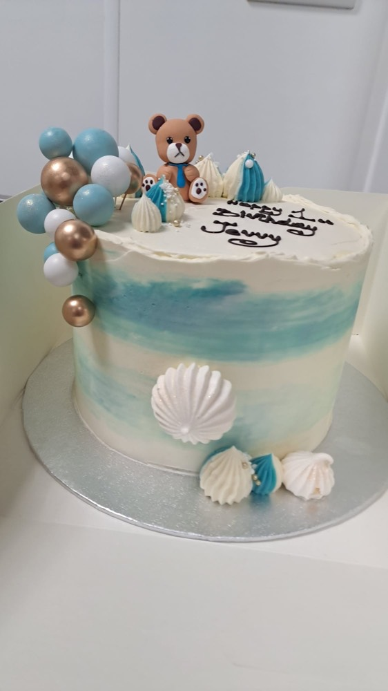
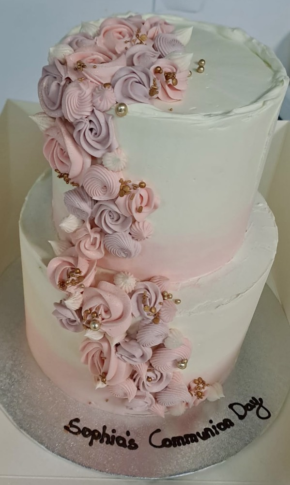
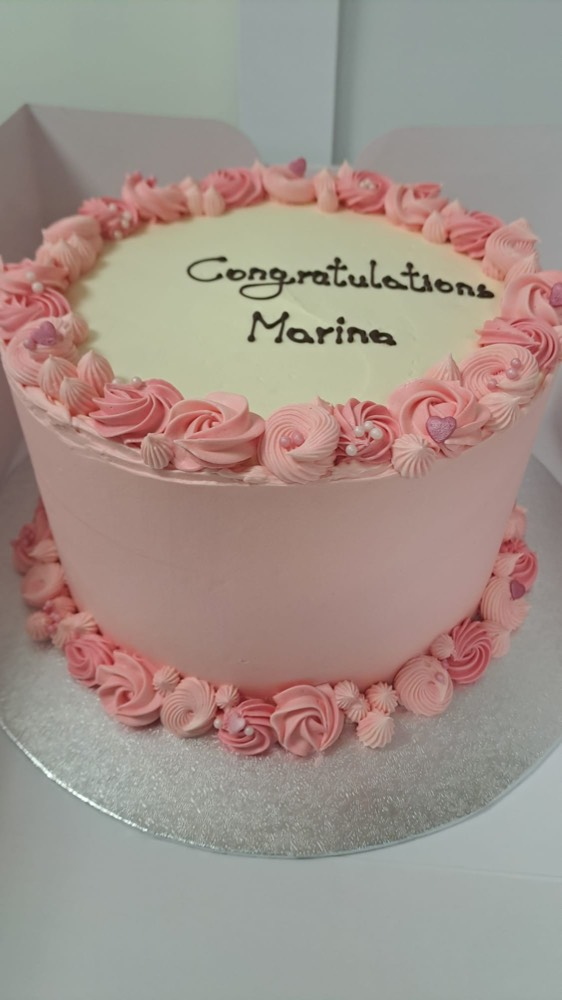
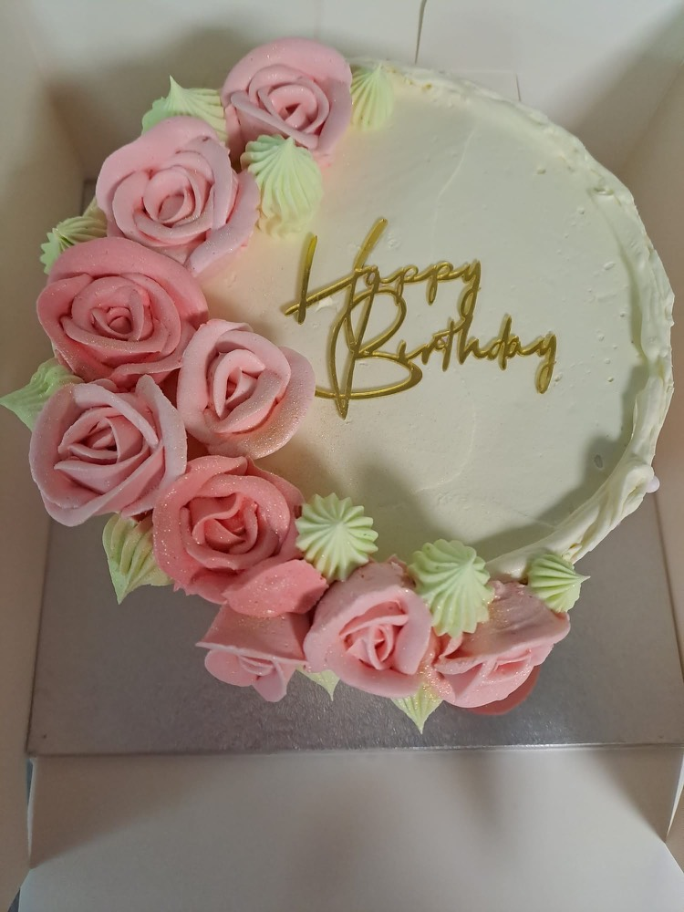
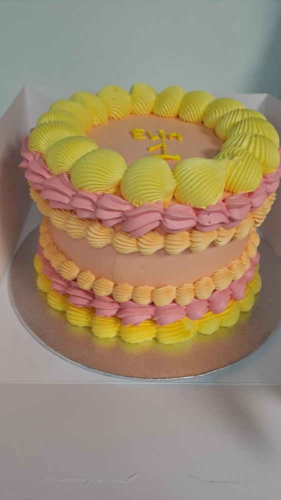
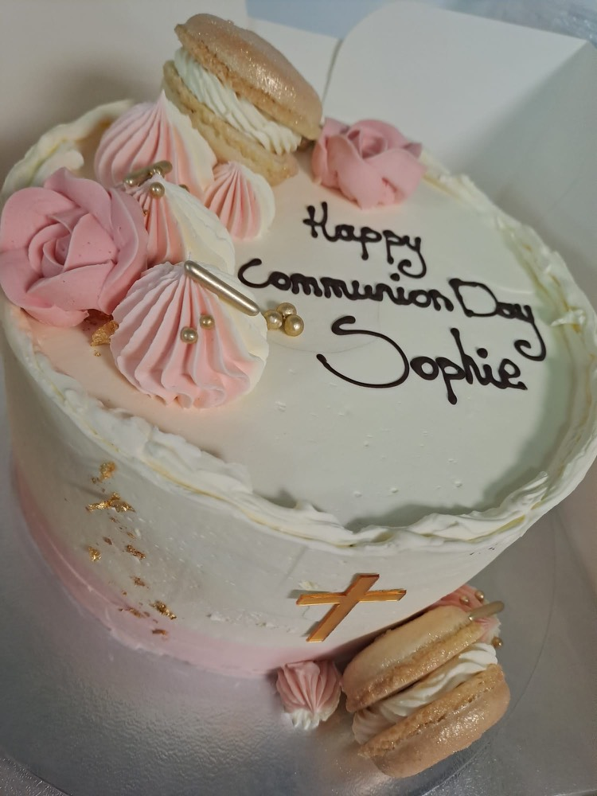

Birthday Cakes
Custom birthday cakes in all sizes, flavours and designs. From children's themed cakes to elegant adult celebrations.
Beautiful custom cakes for every celebration
At The Rós Café in Newmarket on Fergus, we create beautiful custom occasion cakes for all celebrations. Whether you need a birthday cake, wedding cake, communion or confirmation cake, or something special for another occasion — we'll work with you to create the perfect cake. We proudly serve customers across Co. Clare, including Ennis, Shannon, Sixmilebridge and surrounding areas.
Custom birthday cakes in all sizes, flavours and designs. From children's themed cakes to elegant adult celebrations.
Beautiful wedding cakes handcrafted for your special day. Elegant designs to match your wedding theme in Co. Clare.
Communion, confirmation, christening, retirement and all special occasions. Made with care in Newmarket on Fergus.
Delicious gluten free cakes made separately in our kitchen to avoid cross contamination. Full flavour, no compromise.
A selection of our recent occasion cakes from The Rós Café in Newmarket on Fergus, Co. Clare.






Every cake is personalised and decorated to your design. Get in touch for a quote tailored to your occasion.
Chocolate & toffee · white chocolate & raspberry · Nutella & hazelnut · chocolate Guinness · sponge with jam & cream · carrot · coffee · red velvet · Biscoff · chocolate biscuit cake · chocolate rocky road.
Chocolate & toffee · white chocolate & raspberry · sponge with jam & cream · white chocolate rocky road.
We recommend giving us as much notice as possible but need a minimum of one week's notice.
We don't currently offer delivery of occasion cakes. Cakes are available for collection from The Rós Café in Newmarket on Fergus. For larger catering orders, delivery may be available in Co. Clare.
Yes, we create gluten free cakes. All gluten free cakes are made separately in our kitchen to avoid cross contamination.
Our main size is an 8 inch round but other sizes are available on request.
Call us on 061 700844, email info@theroscafe.ie or visit us at The Rós Café in Newmarket on Fergus to discuss your cake.
Give us at least one week's notice. Call or email to place your occasion cake order.
Tap to view our full cake menu with flavours, gluten free options and pricing.
Ready to order? Email us to order your occasion cake or send an enquiry to discuss your requirements.
View all our menus including breakfast, lunch and outside catering.